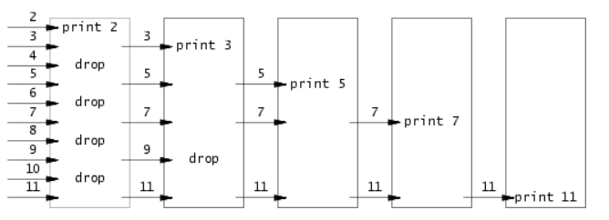

Lab1: Xv6 and Unix utilities
实验任务
启动xv6(难度：Easy)
获取实验室的xv6源代码并切换到util分支
$ git clone git://g.csail.mit.edu/xv6-labs-2020
Cloning into 'xv6-labs-2020'...
...
$ cd xv6-labs-2020
$ git checkout util
Branch 'util' set up to track remote branch 'util' from 'origin'.
Switched to a new branch 'util'
Xv6-labs-2020存储库与本书的xv6-riscv稍有不同;它主要添加一些文件。如果你好奇的话，可以执行git log:
$ git log
您将需要使用Git版本控制系统管理和提交文件以及后续的实验室作业。接下来，切换到一个分支(执行git checkout util)，其中包含针对该实验室定制的xv6版本。要了解关于Git的更多信息，请查看Git用户手册。Git允许您跟踪对代码所做的更改。例如，如果你完成了其中一个练习，并且想检查你的进度，你可以通过运行以下命令来提交你的变化:
$ git commit -am 'my solution for util lab exercise 1'
Created commit 60d2135: my solution for util lab exercise 1
1 files changed, 1 insertions(+), 0 deletions(-)
$
您可以使用git diff命令跟踪您的更改。运行git diff将显示自上次提交以来对代码的更改，git diff origin/util将显示相对于初始xv6-labs-2020代码的更改。这里，origin/xv6-labs-2020是git分支的名称，它是包含您下载的初始代码分支。
- 构建并运行xv6
$ make qemu
riscv64-unknown-elf-gcc -c -o kernel/entry.o kernel/entry.S
riscv64-unknown-elf-gcc -Wall -Werror -O -fno-omit-frame-pointer -ggdb -DSOL_UTIL -MD -mcmodel=medany -ffreestanding -fno-common -nostdlib -mno-relax -I. -fno-stack-protector -fno-pie -no-pie -c -o kernel/start.o kernel/start.c
...
riscv64-unknown-elf-ld -z max-page-size=4096 -N -e main -Ttext 0 -o user/_zombie user/zombie.o user/ulib.o user/usys.o user/printf.o user/umalloc.o
riscv64-unknown-elf-objdump -S user/_zombie > user/zombie.asm
riscv64-unknown-elf-objdump -t user/_zombie | sed '1,/SYMBOL TABLE/d; s/ .* / /; /^$/d' > user/zombie.sym
mkfs/mkfs fs.img README user/xargstest.sh user/_cat user/_echo user/_forktest user/_grep user/_init user/_kill user/_ln user/_ls user/_mkdir user/_rm user/_sh user/_stressfs user/_usertests user/_grind user/_wc user/_zombie
nmeta 46 (boot, super, log blocks 30 inode blocks 13, bitmap blocks 1) blocks 954 total 1000
balloc: first 591 blocks have been allocated
balloc: write bitmap block at sector 45
qemu-system-riscv64 -machine virt -bios none -kernel kernel/kernel -m 128M -smp 3 -nographic -drive file=fs.img,if=none,format=raw,id=x0 -device virtio-blk-device,drive=x0,bus=virtio-mmio-bus.0
xv6 kernel is booting
hart 2 starting
hart 1 starting
init: starting sh
$
如果你在提示符下输入 ls，你会看到类似如下的输出:
$ ls
. 1 1 1024
.. 1 1 1024
README 2 2 2059
xargstest.sh 2 3 93
cat 2 4 24256
echo 2 5 23080
forktest 2 6 13272
grep 2 7 27560
init 2 8 23816
kill 2 9 23024
ln 2 10 22880
ls 2 11 26448
mkdir 2 12 23176
rm 2 13 23160
sh 2 14 41976
stressfs 2 15 24016
usertests 2 16 148456
grind 2 17 38144
wc 2 18 25344
zombie 2 19 22408
console 3 20 0
这些是mkfs在初始文件系统中包含的文件；大多数是可以运行的程序。你刚刚跑了其中一个：ls。
xv6没有ps命令，但是如果您键入Ctrl-p，内核将打印每个进程的信息。如果现在尝试，您将看到两行：一行用于init，另一行用于sh。
退出 qemu : Ctrl-a x。
sleep(难度：Easy)
[!TIP|label:YOUR JOB] 实现xv6的UNIX程序
sleep：您的sleep应该暂停到用户指定的计时数。一个滴答(tick)是由xv6内核定义的时间概念，即来自定时器芯片的两个中断之间的时间。您的解决方案应该在文件user/sleep.c中
提示：
在你开始编码之前，请阅读《book-riscv-rev1》的第一章
看看其他的一些程序（如/user/echo.c, /user/grep.c, /user/rm.c）查看如何获取传递给程序的命令行参数
如果用户忘记传递参数，
sleep应该打印一条错误信息命令行参数作为字符串传递; 您可以使用
atoi将其转换为数字（详见/user/ulib.c）使用系统调用
sleep请参阅kernel/sysproc.c以获取实现
sleep系统调用的xv6内核代码（查找sys_sleep），user/user.h提供了sleep的声明以便其他程序调用，用汇编程序编写的user/usys.S可以帮助sleep从用户区跳转到内核区。确保
main函数调用exit()以退出程序。将你的
sleep程序添加到Makefile中的UPROGS中；完成之后，make qemu将编译您的程序，并且您可以从xv6的shell运行它。看看Kernighan和Ritchie编著的《C程序设计语言》（第二版）来了解C语言。
从xv6 shell运行程序：
$ make qemu
...
init: starting sh
$ sleep 10
(nothing happens for a little while)
$
如果程序在如上所示运行时暂停，则解决方案是正确的。运行make grade看看你是否真的通过了睡眠测试。
请注意，make grade运行所有测试，包括下面作业的测试。如果要对一项作业运行成绩测试，请键入（不要启动XV6，在外部终端下使用）：
$ ./grade-lab-util sleep
这将运行与sleep匹配的成绩测试。或者，您可以键入：
$ make GRADEFLAGS=sleep grade
效果是一样的。
pingpong（难度：Easy）
[!TIP|label:YOUR JOB] 编写一个使用UNIX系统调用的程序来在两个进程之间“ping-pong”一个字节，请使用两个管道，每个方向一个。父进程应该向子进程发送一个字节;子进程应该打印“
”，其中: received ping 是进程ID，并在管道中写入字节发送给父进程，然后退出;父级应该从读取从子进程而来的字节，打印“”，然后退出。您的解决方案应该在文件user/pingpong.c中。: received pong
提示：
使用
pipe来创造管道使用
fork创建子进程使用
read从管道中读取数据，并且使用write向管道中写入数据使用
getpid获取调用进程的pid将程序加入到Makefile的
UPROGSxv6上的用户程序有一组有限的可用库函数。您可以在user/user.h中看到可调用的程序列表；源代码（系统调用除外）位于user/ulib.c、user/printf.c和user/umalloc.c中。
运行程序应得到下面的输出
$ make qemu
...
init: starting sh
$ pingpong
4: received ping
3: received pong
$
如果您的程序在两个进程之间交换一个字节并产生如上所示的输出，那么您的解决方案是正确的。
Primes(素数，难度：Moderate/Hard)
[!TIP|label:YOUR JOB] 使用管道编写
prime sieve(筛选素数)的并发版本。这个想法是由Unix管道的发明者Doug McIlroy提出的。请查看这个网站(翻译在下面)，该网页中间的图片和周围的文字解释了如何做到这一点。您的解决方案应该在user/primes.c文件中。
您的目标是使用pipe和fork来设置管道。第一个进程将数字2到35输入管道。对于每个素数，您将安排创建一个进程，该进程通过一个管道从其左邻居读取数据，并通过另一个管道向其右邻居写入数据。由于xv6的文件描述符和进程数量有限，因此第一个进程可以在35处停止。
提示：
请仔细关闭进程不需要的文件描述符，否则您的程序将在第一个进程达到35之前就会导致xv6系统资源不足。
一旦第一个进程达到35，它应该使用
wait等待整个管道终止，包括所有子孙进程等等。因此，主primes进程应该只在打印完所有输出之后，并且在所有其他primes进程退出之后退出。提示：当管道的
write端关闭时，read返回零。最简单的方法是直接将32位（4字节）int写入管道，而不是使用格式化的ASCII I/O。
您应该仅在需要时在管线中创建进程。
将程序添加到Makefile中的
UPROGS
如果您的解决方案实现了基于管道的筛选并产生以下输出，则是正确的：
$ make qemu
...
init: starting sh
$ primes
prime 2
prime 3
prime 5
prime 7
prime 11
prime 13
prime 17
prime 19
prime 23
prime 29
prime 31
$
参考资料翻译：
考虑所有小于1000的素数的生成。Eratosthenes的筛选法可以通过执行以下伪代码的进程管线来模拟：
p = get a number from left neighbor
print p
=loop:
n = get a number from left neighbor
if (p does not divide n)
send n to right neighbor
p = 从左邻居中获取一个数
print p
loop:
n = 从左邻居中获取一个数
if (n不能被p整除)
将n发送给右邻居

生成进程可以将数字2、3、4、…、1000输入管道的左端：行中的第一个进程消除2的倍数，第二个进程消除3的倍数，第三个进程消除5的倍数，依此类推。
find（难度：Moderate）
[!TIP|label:YOUR JOB] 写一个简化版本的UNIX的
find程序：查找目录树中具有特定名称的所有文件，你的解决方案应该放在user/find.c
提示：
- 查看user/ls.c文件学习如何读取目录
- 使用递归允许
find下降到子目录中 - 不要在“
.”和“..”目录中递归 - 对文件系统的更改会在qemu的运行过程中一直保持；要获得一个干净的文件系统，请运行
make clean，然后make qemu - 你将会使用到C语言的字符串，要学习它请看《C程序设计语言》（K&R）,例如第5.5节
- 注意在C语言中不能像python一样使用“
==”对字符串进行比较，而应当使用strcmp() - 将程序加入到Makefile的
UPROGS
如果你的程序输出下面的内容，那么它是正确的（当文件系统中包含文件b和a/b的时候）
$ make qemu
...
init: starting sh
$ echo > b
$ mkdir a
$ echo > a/b
$ find . b
./b
./a/b
$
xargs（难度：Moderate）
[!TIP|label:YOUR JOB] 编写一个简化版UNIX的
xargs程序：它从标准输入中按行读取，并且为每一行执行一个命令，将行作为参数提供给命令。你的解决方案应该在user/xargs.c
下面的例子解释了xargs的行为
$ echo hello too | xargs echo bye
bye hello too
$
注意，这里的命令是echo bye，额外的参数是hello too，这样就组成了命令echo bye hello too，此命令输出bye hello too
请注意，UNIX上的xargs进行了优化，一次可以向该命令提供更多的参数。 我们不需要您进行此优化。 要使UNIX上的xargs表现出本实验所实现的方式，请将-n选项设置为1。例如
$ echo "1\n2" | xargs -n 1 echo line
line 1
line 2
$
提示：
- 使用
fork和exec对每行输入调用命令，在父进程中使用wait等待子进程完成命令。 - 要读取单个输入行，请一次读取一个字符，直到出现换行符（'\n'）。
- kernel/param.h声明
MAXARG，如果需要声明argv数组，这可能很有用。 - 将程序添加到Makefile中的
UPROGS。 - 对文件系统的更改会在qemu的运行过程中保持不变；要获得一个干净的文件系统，请运行
make clean，然后make qemu
xargs、find和grep结合得很好
$ find . b | xargs grep hello
将对“.”下面的目录中名为b的每个文件运行grep hello。
要测试您的xargs方案是否正确，请运行shell脚本xargstest.sh。如果您的解决方案产生以下输出，则是正确的：
$ make qemu
...
init: starting sh
$ sh < xargstest.sh
$ $ $ $ $ $ hello
hello
hello
$ $
你可能不得不回去修复你的find程序中的bug。输出有许多$，因为xv6 shell没有意识到它正在处理来自文件而不是控制台的命令，并为文件中的每个命令打印$。
提交实验
这就完成了实验。确保你通过了所有的成绩测试。如果这个实验有问题，别忘了把你的答案写在answers-lab-name.txt中。提交你的更改（包括answers-lab-name.txt），然后在实验目录中键入make handin以提交实验。
花费的时间
创建一个命名为time.txt的新文件，并在其中输入一个整数，即您在实验室花费的小时数。不要忘记git add和git commit文件。
提交
你将使用提交网站提交作业。您需要从提交网站请求一次API密钥，然后才能提交任何作业或实验。
将最终更改提交到实验后，键入make handin以提交实验。
$ git commit -am "ready to submit my lab"
[util c2e3c8b] ready to submit my lab
2 files changed, 18 insertions(+), 2 deletions(-)
$ make handin
tar: Removing leading `/' from member names
Get an API key for yourself by visiting https://6828.scripts.mit.edu/2020/handin.py/
Please enter your API key: XXXXXXXXXXXXXXXXXXXXXXXXXXXXXXXX
% Total % Received % Xferd Average Speed Time Time Time Current
Dload Upload Total Spent Left Speed
100 79258 100 239 100 79019 853 275k --:--:-- --:--:-- --:--:-- 276k
$
make handin将把你的API密钥存储在myapi.key中。如果需要更改API密钥，只需删除此文件并让make handin再次生成它(myapi.key不得包含换行符）。
如果你运行了make handin，并且你有未提交的更改或未跟踪的文件，则会看到类似于以下内容的输出：
M hello.c
?? bar.c
?? foo.pyc
Untracked files will not be handed in. Continue? [y/N]
检查上述行，确保跟踪了您的实验解决方案所需的所有文件，即以??开头的行中所显示的文件。您可以使用git add filename命令使git追踪创建的新文件。
如果make handin无法正常工作，请尝试使用curl或Git命令修复该问题。或者你可以运行make tarball。这将为您制作一个tar文件，然后您可以通过我们的web界面上传。
- 请运行“
make grade”以确保您的代码通过所有测试 - 在运行“
make handin”之前提交任何修改过的源代码` - 您可以检查提交的状态，并在以下位置下载提交的代码：https://6828.scripts.mit.edu/2020/handin.py/
可选的挑战练习
编写一个
uptime程序，使用uptime系统调用以滴答为单位打印计算机正常运行时间。（easy）在
find程序的名称匹配中支持正则表达式。grep.c对正则表达式有一些基本的支持。（easy）xv6 shell（user/sh.c）只是另一个用户程序，您可以对其进行改进。它是一个最小的shell，缺少建立在真实shell中的许多特性。例如，
- 在处理文件中的shell命令时，将shell修改为不打印$（moderate）
- 将shell修改为支持
wait（easy） - 将shell修改为支持用“
;”分隔的命令列表（moderate） - 通过实现左括号“
(” 以及右括号“)”来修改shell以支持子shell（moderate） - 将shell修改为支持
tab键补全（easy） - 修改shell使其支持命令历史记录（moderate）
- 或者您希望shell执行的任何其他操作。
如果您非常雄心勃勃，可能需要修改内核以支持所需的内核特性；xv6支持的并不多。